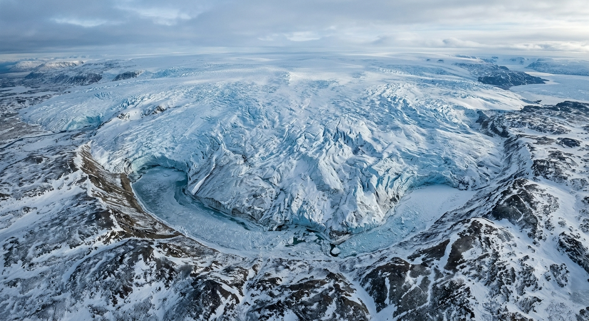

Essa é a página de novidades do Meskita Cálculos! Aqui você fica por dentro de tudo o que está acontecendo no canal, desde novos vídeos até atualizações importantes e planos futuros.
Vídeos novos | Noticias | Avisos
Fique atento(a): grandes novidades estão por vir, incluindo novos formatos de vídeo, conteúdos mais aprofundados e possíveis expansões para outras áreas da ciência!
Nesta seção, você encontrará os vídeos mais recentes do Meskita Cálculos, incluindo conteúdos atualizados sobre Matemática, Física, Química, Astronomia e muito mais. Fique por dentro das últimas aulas e curiosidades científicas publicadas no canal!
Se o vídeo não estiver disponivél aqui, acesse clicando aqui.
Aqui são apresentados temas e situações atuais da plataforma, explicados de forma clara e objetiva, para manter você sempre bem informado.
Agora o canal do Meskita Cálculos está quase chegando a 300 inscritos, cada vez mais perto da meto de chegar a 500 inscritos!
Se você ainda não é inscrito, inscreva-se agora! Tenho certeza de que vai gostar muito do nosso contúdo.
Nessa parte, vocês poderão ver diversos recados e novidades trazidas no canal, como vídeo novo e mudança no site ou no canal, para você ficar a atento no que está acontecendo por aqui.
Vai lá e assita agora! Garanto que não vai se arrempender.
A Baía de Hudson, localizada no Canadá tem uma gravidade de 0,005% menor do que nos outros lugares no mundo! Isso acontece devido ao Rebote Isotático, que é um processo em que a Crosta Terrestre passa para se recuperar da Era Glacial, pois a área de gelo que cobre o local acumulou-se ao longo do tempo, deixando a região tão pesada que empurra a superficie para baixo.
Para saber mais, clique na imagem a seguir para assistir o vídeo completo.
